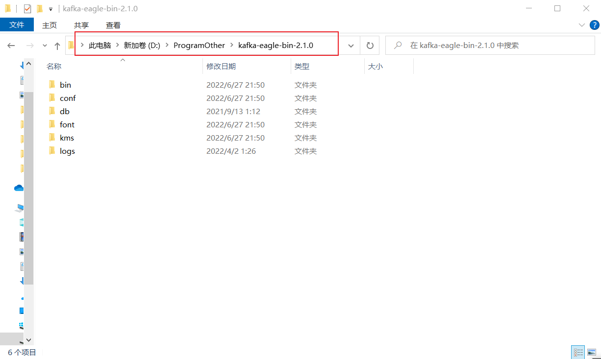
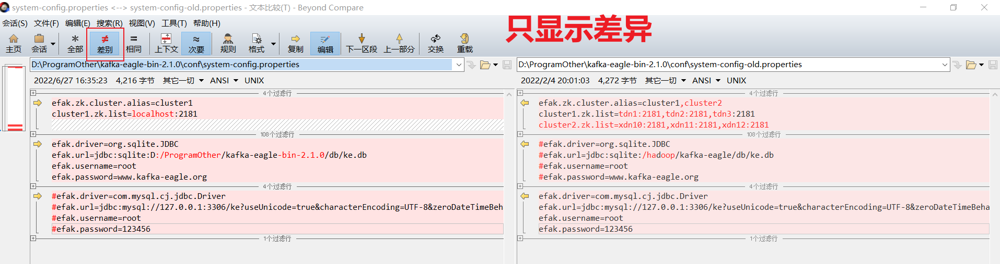
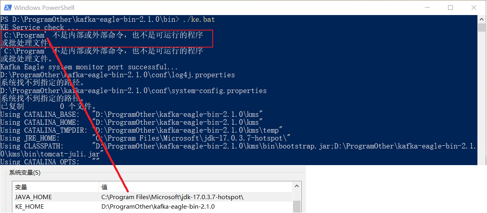
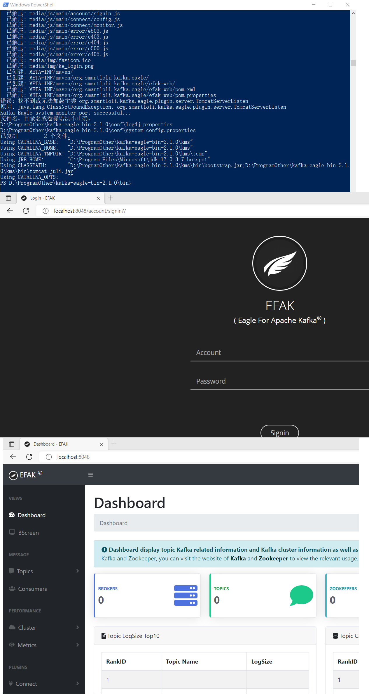

kafka
整理kafka相关知识点……
安装 kafka
下载地址：Downloads - Apache Kafka、Index of /kafka
这里下载的是：
安装之前需要先准备好JAVA环境，可以参考：java - xiaodu114.github.io
Windows
解压
绿色版，免安装的。压缩包放置目录是
配置
在上面的解压目录中新建
- D:/ProgramOther/kafka_2.13-3.2.0/data/kafka-logs
- D:/ProgramOther/kafka_2.13-3.2.0/data/zookeeper
之后修改

启动
在
# 首先是 zookeeper
./zookeeper-server-start.bat D:/ProgramOther/kafka_2.13-3.2.0/config/zookeeper.properties
# 其次是 kafka
./kafka-server-start.bat D:/ProgramOther/kafka_2.13-3.2.0/config/server.properties


创建一个 topics
第一个
# 第一个 topics
./kafka-topics.bat --create --topic level1_level2_level3_001 --bootstrap-server localhost:9092
# 第二个 topics
./kafka-topics.bat --create --topic level1-level2-level3-001 --bootstrap-server localhost:9092
新建完了之后，查看一下
# 列出全部
./kafka-topics.bat --bootstrap-server localhost:9092 --list
# 查看某一个
./kafka-topics.bat --bootstrap-server localhost:9092 --describe --topic level1-level2-level3-001

WARNING: Due to limitations in metric names, topics with a period ('.') or underscore ('_') could collide. To avoid issues it is best to use either, but not both.
生产/消费 消息
都准备好了，开始干活了。
# 生产消息
./kafka-console-producer.bat --bootstrap-server localhost:9092 --topic level1-level2-level3-001
# 消费消息
./kafka-console-consumer.bat --bootstrap-server localhost:9092 --topic level1-level2-level3-001 --from-beginning

如果你是先启动的
安装 kafka eagle
下载地址：EFAK、Download - EFAK
这里下载的是：
Windows
解压
绿色版，免安装的。压缩包放置目录是

配置
看了一下官方的安装教程：Install on Windows - Docs我去，so easy 啊！就四步，前两步安装JDK和检查JDK都已经弄过了，就生下了环境变量

之后就是设置环境变量
启动
如官网说的，在
我去，┭┮﹏┭┮，一堆乱码，页面404…… 开始反思与尝试之路，是不是哪里落下了，还是哪里弄错了……
- 检查并修改配置文件，还原成mysql;替换类似linux下的路径等。都不好使
-
将
%KE_HOME%\bin 添加到Path 。还是不管用 -
设置
CLASSPATH 环境变量，发现没有jre 目录…… - 网上也查了不少：http://www.jiucaihua.cn/news/show-28534.html | kafka eagle 踩坑windows安装_嘤嘤樱桃小丸子的博客-CSDN博客…… 还是不行啊！
- ……
看着人家的炫酷大屏，都是泪啊！洗洗睡吧！
第二天，到了公司之后，忍不住啊，又试了一下。公司的电脑已经安装了java环境，于是只弄了
- 一个是jdk17，一个是jdk8（公司）
-
jdk8的环境变量
Path 中包含jre的路径 - ……
分析了之后，于是便安装jdk17（和家中的相同），但是安装之后没有出现
到家之后，来不及干别的，赶紧试试jdk8，结果结果结果还是不行，郁闷升级了，啊啊啊啊啊啊！冷静了一下，想着看看

原来是这样，原来是这样，原来是这样啊，批处理文件不支持空格路径。现在想想公司的为什么可以，才恍然大悟，公司java的安装路径是
找出了原因就好说了，于是便改了一下
好难啊！我开始再次查看

最后在说一下Tomcat中文乱码的问题，